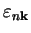

Generally, while running any of the DOS options, you will be given a table of ``physical bands'' in your system extracted from the eigenvalues,

. The physical bands boundaries give the starting and the ending position of every energy region that contains coninuous energy levels. The individual bands (all energies for the given state
_______> Structure of ``physical'' bands <________
Band 1 spans energy interval: [-19.8216,-17.9913] and states { 1, 1}
Band 2 spans energy interval: [ -6.4785, -2.6852] and states { 2, 4}
Band 3 spans energy interval: [ -1.2610, -1.0436] and states { 5, 5}
Band 4 spans energy interval: [ -0.1859, 15.1450] and states { 6, 8}
Band 5 spans energy interval: [ 15.2456, 37.8405] and states { 9,18}
Band 6 spans energy interval: [ 37.9769, 41.0874] and states {19,20}
The bands 1 and 2 are core and valence bands, the band 3 may (presumably)
correspond to a local gap state while the remaining 3 bands are parts
of the conduction band. This can be judged from studying energy intervals
they span (energies are given in eV).
You have also numbers of states (as they appear in the file band.out) in this table. This is important as you can immediately see, for example, that only one state (the 5-th) is responsible for the third band, and thus this particular state may be a local state induced by a defect or irregularity in the lattice. Then, you can go and see the partial charge density, Section 3.6.3, associated with this state to find out, e.g. where in the cell it is localised.